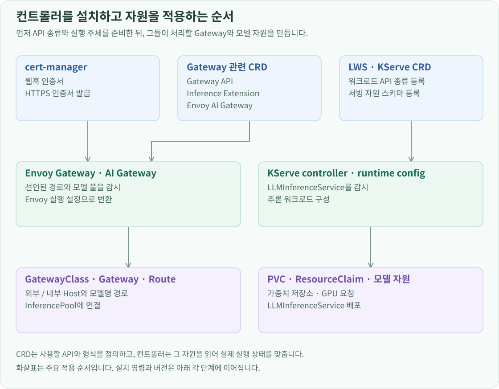

구축 개요
모델 Pod를 선언하기 전에 Kubernetes가 Gateway와 모델 서비스 자원을 처리할 수 있어야 합니다. CRD가 자원의 형식을 등록하고, 컨트롤러가 그 선언을 실제 Deployment·Service·프록시 설정으로 바꿉니다. 이 환경은 cert-manager, Envoy Gateway, Envoy AI Gateway, LeaderWorkerSet, KServe를 Helm release로 나누어 관리합니다.
아래 명령은 관리 Mac의 ~/openstack-k8s-llmd-lab에서 실행하는 신규 구성 순서입니다. --wait는 각 release의 워크로드가 준비될 때까지 기다립니다.
웹훅 인증서 준비
cert-manager는 Open WebUI의 HTTPS뿐 아니라 컨트롤러 웹훅 인증서도 관리합니다. LWS와 AI Gateway를 설치하기 전에 준비합니다.

helm upgrade --install cert-manager cert-manager \
--repo https://charts.jetstack.io --version v1.21.3 \
--kube-context openstack-k8s-llmd-lab \
--namespace cert-manager --create-namespace \
--set crds.enabled=true --wait
요청을 받아 모델 풀로 전달하는 Gateway
Envoy Gateway 차트는 Gateway API와 Envoy 설정용 CRD를 함께 설치합니다. values에는 AI Gateway의 확장 서비스 주소와 InferencePool backend를 등록합니다. Envoy가 Route를 프록시 설정으로 변환할 때 AI Gateway의 모델 라우팅 기능을 함께 사용하도록 연결하는 설정입니다.
helm upgrade --install eg oci://docker.io/envoyproxy/gateway-helm \
--version v1.8.1 --kube-context openstack-k8s-llmd-lab \
--namespace envoy-gateway-system --create-namespace \
--values infra/helm/envoy-gateway/values.yaml --wait
모델 Pod의 집합을 나타내는 InferencePool은 Gateway API Inference Extension이 제공합니다. v1.5.0-rc.2의 CRD 배포 파일을 적용합니다.
kubectl --context openstack-k8s-llmd-lab apply --server-side \
-f https://github.com/kubernetes-sigs/gateway-api-inference-extension/releases/download/v1.5.0-rc.2/manifests.yaml
AI Gateway는 CRD와 컨트롤러를 각각 설치합니다. 컨트롤러의 Service 이름을 ai-gateway-controller로 고정해 Envoy Gateway values의 확장 서비스 주소와 일치시킵니다.
helm upgrade --install aieg-crd oci://docker.io/envoyproxy/ai-gateway-crds-helm \
--version v1.0.0 --kube-context openstack-k8s-llmd-lab \
--namespace envoy-ai-gateway-system --create-namespace --wait
helm upgrade --install aieg oci://docker.io/envoyproxy/ai-gateway-helm \
--version v1.0.0 --kube-context openstack-k8s-llmd-lab \
--namespace envoy-ai-gateway-system \
--values infra/helm/envoy-ai-gateway/values.yaml --wait
모델 워크로드를 관리하는 컨트롤러
LeaderWorkerSet은 리더와 워커로 구성된 실행 그룹을 관리합니다. 공식 차트의 enableCertManager: true 설정을 사용하므로 cert-manager가 웹훅의 CA bundle을 주입합니다.
helm upgrade --install lws oci://registry.k8s.io/lws/charts/lws \
--version 0.11.0 --kube-context openstack-k8s-llmd-lab \
--namespace lws-system --create-namespace \
--values infra/helm/lws/values.yaml --wait
KServe는 LLMInferenceService의 CRD, 컨트롤러, 기본 runtime config를 분리해 설치합니다. createGIECRDs: false로 이미 설치한 Inference Extension CRD의 관리를 중복하지 않습니다. KServe의 LLMInferenceService 차트가 이 세 release의 배포 단위입니다.
helm upgrade --install kserve-llmisvc-crd oci://ghcr.io/kserve/charts/kserve-llmisvc-crd \
--version v0.20.0 --kube-context openstack-k8s-llmd-lab \
--namespace kserve --create-namespace --wait
helm upgrade --install kserve-llmisvc-resources oci://ghcr.io/kserve/charts/kserve-llmisvc-resources \
--version v0.20.0 --kube-context openstack-k8s-llmd-lab \
--namespace kserve --values infra/helm/kserve/values.yaml --wait
helm upgrade --install kserve-runtime-configs oci://ghcr.io/kserve/charts/kserve-runtime-configs \
--version v0.20.0 --kube-context openstack-k8s-llmd-lab \
--namespace kserve --values infra/helm/kserve/runtime-values.yaml --wait
Gateway 자원과 모델 배포 연결
컨트롤러가 준비되면 llm-d Namespace에 앱과 Route를 선언합니다. GatewayClass는 Envoy Gateway를 처리 주체로 지정하고, Gateway는 HTTP·HTTPS listener와 NodePort 설정을 사용합니다.
kubectl --context openstack-k8s-llmd-lab create namespace llm-d
kubectl --context openstack-k8s-llmd-lab apply -f infra/helm/envoy-gateway/gatewayclass.yaml
kubectl --context openstack-k8s-llmd-lab apply -f infra/helm/envoy-gateway/gateway.yaml
Gateway의 HTTPS listener는 webui-tls Secret을 참조합니다. WebUI 인증서 구성의 CA·Certificate를 적용하면 cert-manager가 이 Secret을 채웁니다. HTTP 모델 경로는 별도의 listener와 Route를 사용합니다.
모델 파일을 PVC에 준비하고 GPU ResourceClaim을 만든 뒤 LLMInferenceService와 모델 Route를 적용합니다.